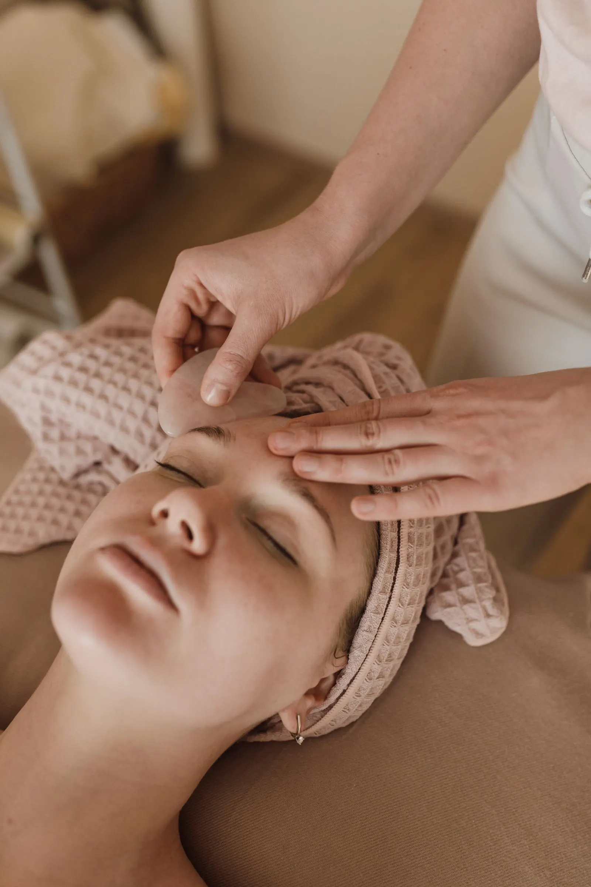
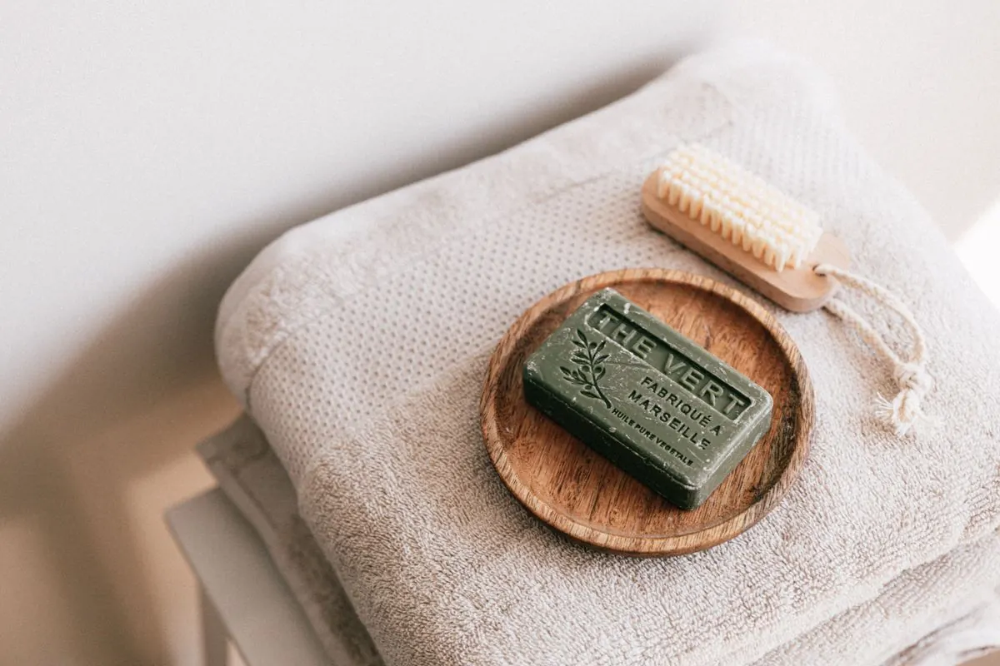
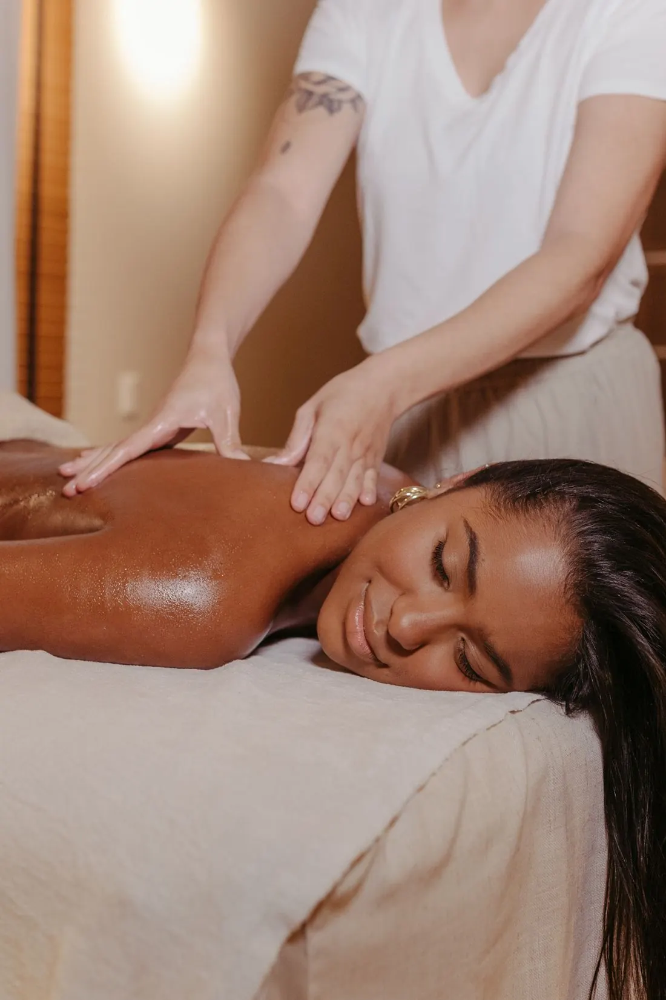

Relaks i wellness
Rytuały na twarz i ciało, masaże i chwila ciszy w ciepłym wnętrzu. Czas tylko dla siebie, bez pośpiechu.

Hotel Gdańsk Boutique, 5. piętro · ul. Szafarnia 9
Miejsce, w którym zwalniasz. Relaks, wellness i longevity w ciepłym wnętrzu, a gdy skóra potrzebuje więcej, kosmetologia i technologie hi-tech.
Łączymy chwilę wytchnienia z kosmetologią, która daje realny efekt. Zabiegi dobieramy do potrzeb skóry i do tego, jak chcesz się czuć po wyjściu.
Rytuały na twarz i ciało, masaże i chwila ciszy w ciepłym wnętrzu. Czas tylko dla siebie, bez pośpiechu.

Troska o kondycję skóry i samopoczucie na lata: regeneracja, dobre nawyki i plan pielęgnacji, który da się utrzymać.

Każdy plan zaczyna się od oceny kondycji skóry. Kosmetolog dobiera zabiegi i pielęgnację domową do jej potrzeb.
Nowoczesne, nieinwazyjne urządzenia tam, gdzie potrzebny jest wyraźny efekt. W tej samej spokojnej, otulającej atmosferze.
Przykładowa oferta - oferta Gdańska do uzupełnienia materiałami od Państwa.

W Balola Gdańsk nie ma pośpiechu. Sam zabieg to tylko część wizyty, równie ważne jest to, jak się czujesz przed nim i po nim.

Balola Gdańsk mieści się w Hotelu Gdańsk Boutique przy ul. Szafarnia 9, kilka kroków od Głównego Miasta. Ciepłe beże, drewno i miękkie światło sprawiają, że łatwo tu zapomnieć o mieście za oknem.
Serie zabiegów i plan pielęgnacji prowadzone przez kosmetologów Baloli, z regularnymi wizytami w spokojnym miejscu.
SPA jest w tym samym budynku. Rytuał po podróży albo chwila relaksu przed wieczorem w mieście. Strona i rezerwacja także po angielsku.
Balola powstała w Sopocie z myślą o kobietach aktywnych, wymagających i świadomych. W Gdańsku zachowujemy tę samą dbałość o skuteczność, w spokojniejszym, bardziej domowym klimacie.
Salon prowadzi mgr Marta Socha-Kilanowska, kosmetolog, biotechnolog i podolog. Każdy przypadek traktuje holistycznie, bo skóra jest lustrem organizmu, a efekt zabiegu zależy też od codziennej pielęgnacji.
Balola Sopot, ul. Tadeusza Kościuszki 4/1/BWizyty po wcześniejszej rezerwacji. Termin i zabieg wybierzesz online.
Rezerwacja onlineTelefon, e-mail i Instagram Balola Gdańsk - do uzupełnienia.